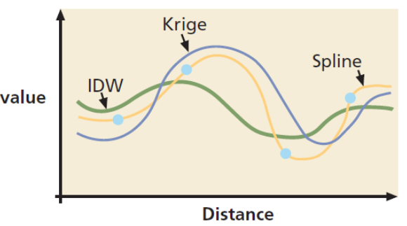

Elección del método de interpolación
No existe un método universalmente establecido como más adecuado en todas situaciones y la elección se ha de fundamentar en diversos factores. Al mismo tiempo, un método puede ofrecer resultados muy distintos en función de los parámetros de ajuste, con lo que no solo se ha de elegir el método adecuado, sino también la forma de usarlo.
Los factores a tener en cuenta para la elección son:
- Las características de la variable a interpolar.
- Las características de la superficie a interpolar.
- La calidad de los datos de partida.
- El rendimiento de los algoritmos.
- El conocimiento de los métodos.

Si interpolamos valores de precipitación máxima anual, no es adecuado utilizar aquellos métodos que suavicen excesivamente.
Si necesitamos introducir barreras, Kriging no las contempla.
Cuando los datos de partida son de gran exactitud, los métodos exactos pueden tener más interés.
IDW es el más simple y rápido y Kriging el más sofisticado y lento.
Kriging exige una sólida base de conceptos geoestadísticos para su aplicación.